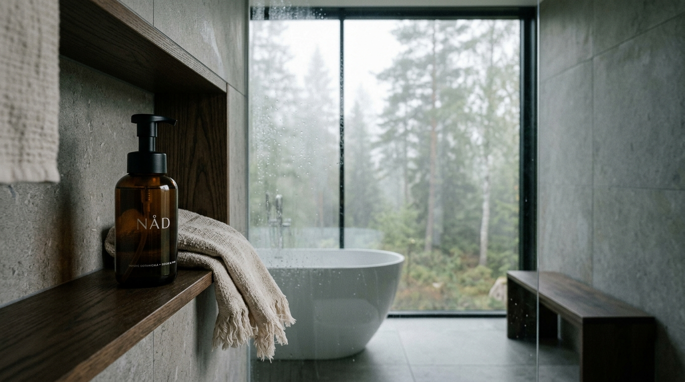
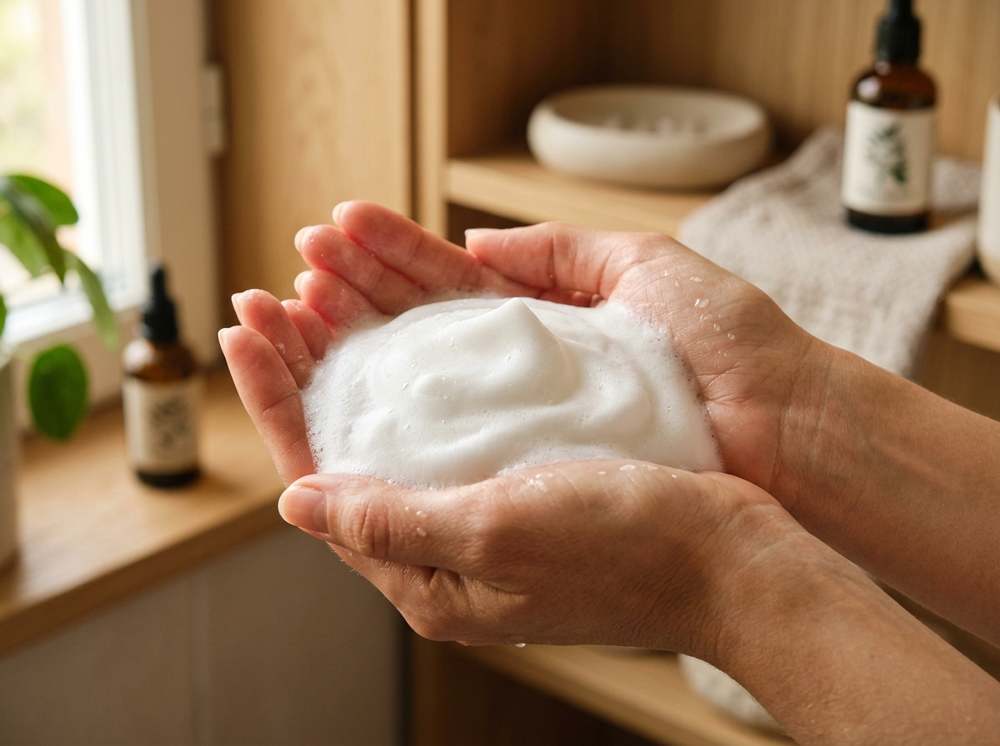
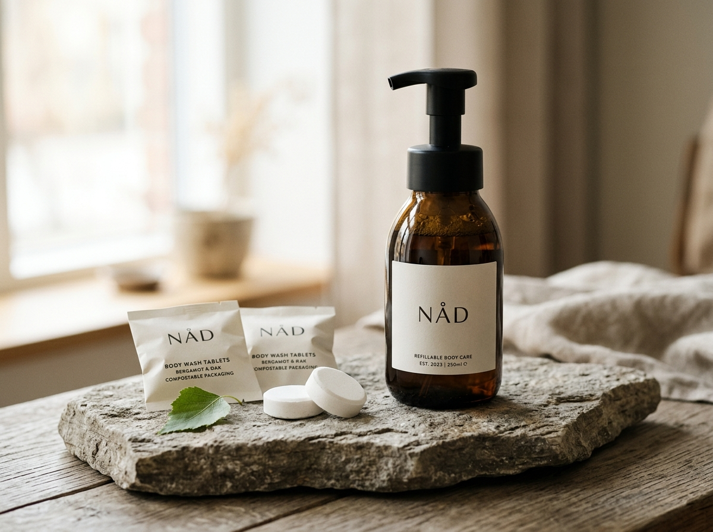

Inga krav.
Bara hudvårdande lugn.
Närproducerad, vattenfri kroppsvård som förvandlar din morgondusch från stressig hygien till en barriärstärkande återhämtningsritual. Berikad med nordisk björksav, ceramider och dämpad bergamott.

Ett modernt badrumsdilemma
Varför frakta vatten när du har det i kranen?
Traditionell duschtvål består till över 85 % av vatten. Det leder till onödigt tunga transporter, uttorkande syntetiska konserveringsämnen och ett ständigt överflöd av ful engångsplast.
Engångsplast och uttorkande syror
-
✕
85–90% onödigt vatten: Tunga transporter med massiva koldioxidutsläpp som följd.
-
✕
Skadad hudbarriär ("nätdermatit"): Starka sulfater (SLS) och artificiella dofter som torkar ut känslig nordisk vinterhud.
-
✕
Visuellt brus i badrummet: Skrikiga plastflaskor som förstör hemmets harmoni och måste slängas var tredje vecka.
Medveten lyx, mikroskum och noll avfall
-
✓
94% lägre transportutsläpp: Fjäderlätta tabletter i komposterbara papperspåsar. Tillsätt bara kranvatten.
-
✓
Avancerad barriärterapi: Ceramidkomplex, glycerin och antioxidantrik björksav som lugnar och skyddar hudens mikrobiom.
-
✓
Tidlös badrumsinredning: Tungt, mörkt bärnstensglas som fångar morgonljuset och pryder hyllan för evigt.
Skinification av kroppen
Samma aktiva barriärvård du ger ditt ansikte.
Den skandinaviska vintern utsätter huden för torr luft, temperatursvängningar och stress. Därför har vi tagit bort uttorkande tensider och ersatt dem med kliniskt beprövade fuktlåsare.
Nordisk Björksav (Betula Alba)
Skördad under tidig vår i norra Sverige. Rik på sockerarter, aminosyror och spårämnen som ger djup fuktmättnad och lugnar reaktiv hy.
Trippel-Ceramidkomplex (NP, AP, EOP)
Identiska med hudens egna lipider. Förseglar fukten i stratum corneum och förhindrar transepidermal vattenförlust (TEWL).
Sensorisk Doftnot: Dämpad Botanik
Subtila eteriska oljor av krossade björkblad, bergamott och mjukt cederträ. Utvecklad för att sänka pulsen utan syntetisk överparfymering.

Friktionsfri enkelhet
Tre steg. Under 15 minuter. Ren närvaro.
Medan andra varumärken kräver upp till 90 minuters upplösningstid, löser NÅD:s finkorniga tablett upp sig självständigt i ljummet kranvatten på under en kvart.
Fyll med kranvatten
Fyll din bärnstensflaska med 250 ml ljummet kranvatten upp till markeringen på flaskans baksida.
Släpp i 1 NÅD-tablett
Öppna den komposterbara pappersrefillen och släpp i tabletten. Ingen skakning krävs – låt den bubbla i lugn och ro.
Pumpa & upplev ritualen
Skruva på mikroskumpumpen. Ett enkelt tryck förvandlar vätskan till ett sammetslent, skyddande skum.
Vattenfria koncentrat saknar artificiella syntetiska förtjockningsmedel (polyetenglykol). Vår specialdesignade pump blandar vätskan med luft vid varje pumpning, vilket ger ett krämigt lödder utan onödiga kemikalier.
Mätbar skillnad för ditt hem & planeten
Beräkna din personliga årsbesparing
Se vad övergången till NÅD innebär för plastavfall, transportutsläpp och badrumsekonomi.
Marknadsöversikt
Hur skiljer sig NÅD mot alternativen?
Vi designade NÅD efter att ha granskat branschens största brister: för höga priser, tröga upplösningstider och avsaknad av äkta barriärvård.
| Egenskap | NÅD Barriärvård | The Green Lab Co | Elico | Vanlig Apotekstvål |
|---|---|---|---|---|
| Hudvårdande aktiver | Björksav + Ceramider | Syntetiska dofter | Standard växtoljor | Sulfater (SLS) / Vatten |
| Flaskans materialitet | Tungt återvunnet bärnstensglas | Aluminiumflaska | Glasflaska + silikon | Engångs plastflaska |
| Upplösningstid | < 15 minuter | ~30–45 minuter | ~30–60 minuter | Färdigblandad (85% vatten) |
| Pris Startkit | 249 SEK (kampanj) | ~102–129 SEK (refill) | 399–469 SEK | ~65–120 SEK / flaska |
| Mikroskumpump ingår | Ja (Matt svart) | Ja | Ja | Nej (Standard gel) |
| Emballage | 100% Komposterbart FSC-papper | Plastblister / papper | Komposterbar påse | Engångsplast (PET) |

Allt detta ingår i ditt Startkit:
- 1x Återanvändbar bärnstensflaska (250 ml): Tillverkad av 100% återvunnet europeiskt glas.
- 1x Specialanpassad mikroskumpump: Tålig, matt svart finish med mjuk mekanik.
- 3x NÅD Refilltabletter (Doft: Morgondagg): Motsvarar 750 ml färdig barriärvård.
- 1x Dämpande silikonbas: Förhindrar halk och klinkerskador i duschen.
NÅD Startkit • Morgondagg
249 kr idag. Därefter 3 refiller (75 kr) var 3:e månad. Pausa när du vill.
299 kr ordinarie engångspris utan löpande refills.
Röster från vardagen
"Äntligen slipper jag skrikiga plastflaskor och stramande vinterhud."
”Som hållbarhetsstrateg är jag extremt skeptisk till greenwashing. NÅD har gjort allt rätt: transparent innehåll, äkta nordisk björksav och en flaska som faktiskt ser ut som en vacker inredningsdetalj i mitt badrum.”
”Min hy brukar alltid klia och strama i november. Efter att ha bytt till NÅD:s ceramidskum känns huden mjuk direkt efter duschen utan att jag behöver smörja in mig med tunga lotioner.”
”Att slippa köpa och släpa hem stora plastdunkar med tvål från mataffären är en befrielse. Refillerna kommer i ett platt kuvert i brevlådan och löser upp sig på tio minuter.”
Vanliga frågor
Allt du behöver veta om NÅD
NÅD löser upp sig på under 15 minuter i ljummet kranvatten. Vår unika mikrogrynsstruktur gör att tabletten självständigt expanderar och löses upp utan att lämna klumpar eller rester på botten.
Eftersom vår formula inte innehåller petrokemiska syntetiska förtjockningsmedel är vätskan tunnflytande i vatten. Den kräver därför en skumpump för att mekaniskt blanda in luft och skapa det krämiga mikroskummet. Vi rekommenderar starkt vår medföljande flaska i härdat bärnstensglas som är dimensionerad för exakt rätt dosering.
Ja, formulan är utvecklad i samråd med skandinaviska hudterapeuter med fokus på barriärreparation. Den är 100% fri från sulfater (SLS/SLES), parabener och syntetiska färgämnen, berikad med ceramider som stärker hudens naturliga skyddsmantel.
Vår prenumeration har ingen bindningstid. Du får automatiskt hem 3 nya refiller (75 kr totalt = 25 kr per refill) i brevlådan i det intervall du valt (t.ex. var 3:e månad). Du kan när som helst pausa, ändra datum eller avsluta direkt via en länk i din bekräftelse utan att behöva ringa eller mejla.
Flaskan är tillverkad i extra tjockt, stötdämpande laboratorieglas och levereras alltid med vår skräddarsydda silikonsockel. Sockeln ger optimal friktion mot våta kalkstens- eller kakelytor och dämpar eventuella stötar.